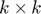
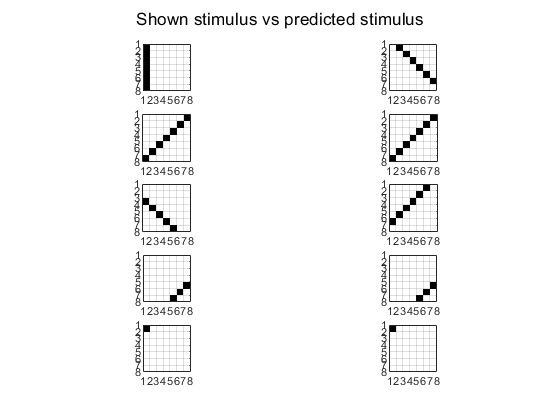

Script for testing simple pattern recognition
Given , we generate a set of binary patterns on a grid of  composed of vertical, horizontal and diagonal lines. We then make the model learn (option C and option D) with this stimuli and test its capacity of prediction. We then repeat the experiment adding two more complex patterns (crosses)
Option D:
Option C:
Oct. 23, 2019, ver 0.2.
rng(2) k = 7
By increasing the value of and, therefore, the dimensions of the stimuli and by normalizing the patterns we get that the results do not worsen that much between without complex patterns (C:0.4750, D:0.975 vs C:0.4286, D: 0.9048)
Oct. 13, 2019, ver 0.1.
rng(2) k = 5
Simple patterns
The results are very good with better accuracy for option D (0.9643) than option C (0.6789)
Complex patterns
Just by adding the two crosses the learning worsens significatively and the accuracy of both methods decrases (C: 0.2667 - D: 0.3667)
Contents
Set the problem parameters
clear close all path(path,'MatFunc') rng(2) % for reproducibility of the results k = 7; psl = 0.95; % selective probability n = k*k; % neuron dimension M = 100; % number of neurons L = 6*k-2; % number of stimuli Th = sqrt(3)*0.5; % threshold alpha = 20; Tmax = 400; % max integration time f = @(x) mod(round(x),L)+1; % function defining the stimulus sequence delta = sqrt(1 - (2*norminv(psl) / sqrt(5*n))); b2 = (Th/delta)^2; % beta^2 [p,s] = generatePatterns(k); % generate patterns W0 = 2*rand(n,M) - 1; % random neurons [~,id] = sort(sum(s'*W0 > Th)); % sort neurons for convenience W0 = W0(:,id); % Plot some patterns clf for i=1:8 subplot(4,2,i) showPattern(p(:,:,i*floor(L/8))); end sgtitle("Some of the patterns used");
Do simulations with Option C. Simple patterns
h = 0.005; % time step (better to decrease) d = 4; % inhibitory coupling W = SimulateNeurons3(Tmax, h, W0, s, f, alpha, b2, Th, d); ac = accuracy(W,s,Th) % Plot raster figure; V = W'*s; F = V > Th; R = orderRasterPlot(F'); spy(R); title("Rasterplot neurons and stimuli they respond to"); xlabel("Neurons"); ylabel("Stimuli"); % Plot patterns figure j = 1; for i=1:5 subplot(5,2,j); j = j + 1; showPattern(p(:,:,i*floor(L/5))); pred = predict(V,W,s(:,i*floor(L/5)),Th); subplot(5,2,j); j = j + 1; showPattern(p(:,:,pred)); end sgtitle("Shown stimulus vs predicted stimulus");
ac =
0.4750
 Do simulations with Option D. Simple patterns
h = 0.005; d = 150; % Option D W = SimulateNeurons4(Tmax, h, W0, s, f, alpha, b2, Th, d); ac = accuracy(W,s,Th) % Plot raster figure; V = W'*s; F = V > Th; R = orderRasterPlot(F'); spy(R); title("Rasterplot neurons and stimuli they respond to"); xlabel("Neurons"); ylabel("Stimuli"); % Plot patterns figure j = 1; for i=1:5 subplot(5,2,j); j = j + 1; showPattern(p(:,:,i*floor(L/5))); pred = predict(V,W,s(:,i*floor(L/5)),Th); subplot(5,2,j); j = j + 1; showPattern(p(:,:,pred)); end sgtitle("Shown stimulus vs predicted stimulus");
ac =
0.9750
Add complex patterns
hk = ceil(k/2); cross1 = p(:,:,hk) + p(:,:,hk+k); cross1(hk,hk) = 1; cross1 = cross1/norm(cross1); cross2 = p(:,:,2*k+1) + p(:,:,2*k+2); cross2(hk,hk) = 1; cross2 = cross2/norm(cross2); % Plot crosses subplot(1,2,1); showPattern(cross1); subplot(1,2,2); showPattern(cross2); sgtitle("Crosses added"); p(:,:,6*k-1) = cross1; p(:,:,6*k) = cross2; s = [s cross1(:) cross2(:)];
Do simulations with Option C. Complex patterns
h = 0.005; % time step (better to decrease) d = 4; % inhibitory coupling W = SimulateNeurons3(Tmax, h, W0, s, f, alpha, b2, Th, d); ac = accuracy(W,s,Th) % Plot raster figure; V = W'*s; F = V > Th; R = orderRasterPlot(F'); spy(R); title("Rasterplot neurons and stimuli they respond to"); xlabel("Neurons"); ylabel("Stimuli"); % Plot patterns figure j = 1; for i=1:5 subplot(5,2,j); j = j + 1; showPattern(p(:,:,i*floor(L/5))); pred = predict(V,W,s(:,i*floor(L/5)),Th); subplot(5,2,j); j = j + 1; showPattern(p(:,:,pred)); end sgtitle("Shown stimulus vs predicted stimulus");
ac =
0.4286
Do simulations with Option D. Complex patterns
h = 0.005; d = 150; % Option D W = SimulateNeurons4(Tmax, h, W0, s, f, alpha, b2, Th, d); ac = accuracy(W,s,Th) % Plot raster figure; V = W'*s; F = V > Th; R = orderRasterPlot(F'); spy(R); title("Rasterplot neurons and stimuli they respond to"); xlabel("Neurons"); ylabel("Stimuli"); % Plot patterns figure j = 1; for i=1:5 subplot(5,2,j); j = j + 1; showPattern(p(:,:,i*floor(L/5))); pred = predict(V,W,s(:,i*floor(L/5)),Th); subplot(5,2,j); j = j + 1; showPattern(p(:,:,pred)); end sgtitle("Shown stimulus vs predicted stimulus");
ac =
0.9048